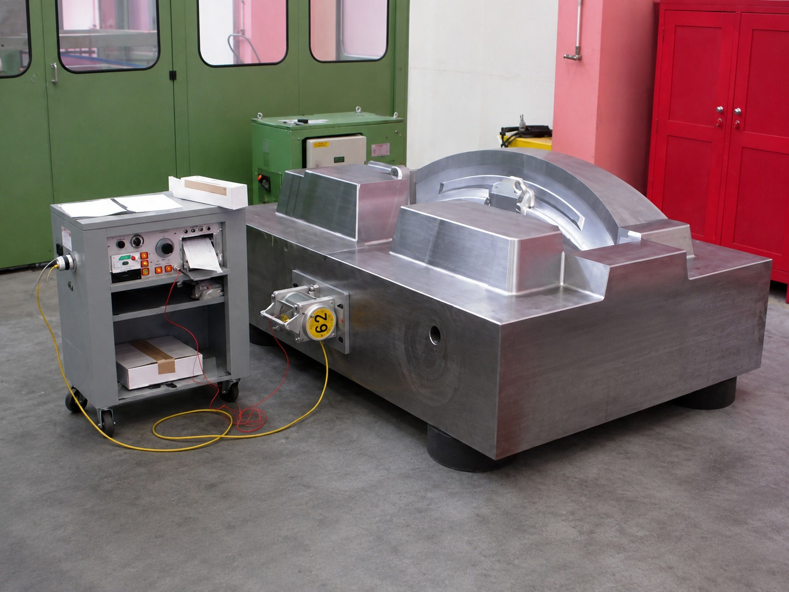

Residual stresses from casting, solidification, flame cutting, welding and rough machining can redistribute during subsequent manufacturing and affect guideways, mounting surfaces and critical geometry. Formula 62® VSR can be applied before precision machining for suitable components.


Application-specific VSR helps support critical geometry, alignment and dimensional stability through subsequent machining stages.
GNSR evaluates material, dimensions, weight, geometry, fabrication/casting history and machining stage before selecting equipment configuration, isolation, vibration parameters and treatment procedure.

Minimizes thermal-distortion risk
Preserves existing material properties subject to application
Suitable for inter-stage processing between rough machining, semi-finishing and final grinding
Reduces reliance on extended natural/yard aging
Allows stabilization at the appropriate manufacturing stage